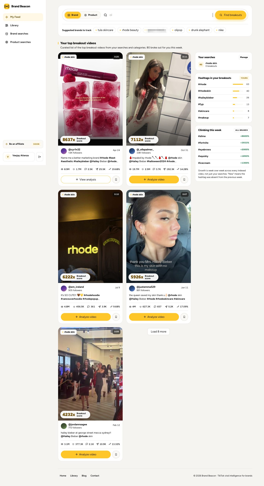
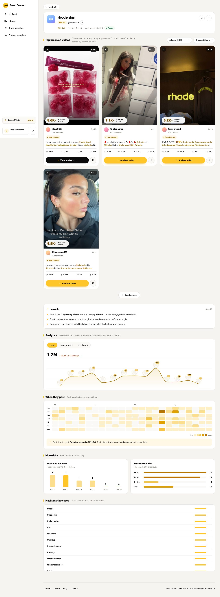
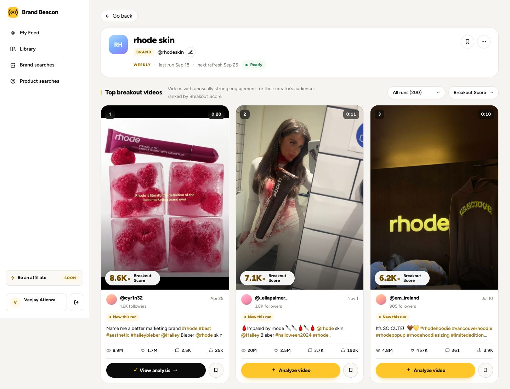
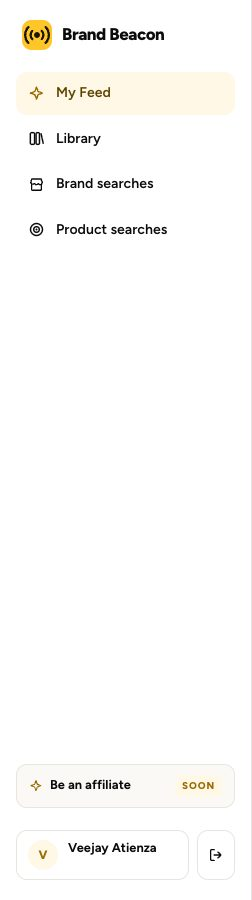

Before and after, simplified
Left: the live app, captured on 19 Sep 2026 (the admin panel is shown as an outline, since it holds customer data). Right: the redesign. Each redesign is a working mockup, so you can scroll it and click between screens.
RESEARCH, 19 SEP: what the market does
Checked: TikTok One, Kalodata, FastMoss, Reacher, Euka, Modash, Upfluence, Aspire, GRIN, Insense, Billo, Foreplay, Motion, vidIQ, 1of10, Viewstats, Virlo, Rival IQ, Dash Social, Sprout, Exolyt, Metricool.
- Score: every outlier tool shows a multiple (7×) against the account's usual views. Viewstats uses the last 10 videos. Suggested definition: this video's views divided by the median views of that account's recent videos. Show a worked example and mark scores early for 48h. Never say 'vs followers'. Our live app says followers in one place.
- vidIQ's top color band starts at 10×. Our live scores read 1.8K× to 8.6K×, which suggests the formula divides by followers, not usual views. That is a formula question for Ivan, not a design one.
- Sharing: Foreplay and Motion share by no-login link. Nobody safe sends cold email from the app.
- Tiny creators mostly are not on TikTok One (sources disagree on the entry bar: 1K or 10K followers). Our creator list reaches people TikTok's own tool does not.
- Competitor pricing: Reacher $199, Modash $199, Kalodata about $46 to $99, 1of10 $29 to $69, Virlo $49 to $199. BB at $99 sits in the middle.
FOUND LIVE ON 19 SEP (for Lester)
- My Feed says rhode skin has 0 breakouts. Brand searches says 55.
- The readout filter says 'New this run (200)'. Brand searches says 88 new scanned, 55 new breakouts, 0 total.
- Breakouts per week shows 0 for Sep 7 and Sep 14 on a run marked new.
- The score reads '8637x' on My Feed and '8.6K×' on the readout.
- Three Breakout Score definitions: 'unusually strong engagement for their creator's audience' (readout), 'weighted engagement relative to its creator's follower count' (analysis), and '10× above the creator's own baseline' (homepage). Ivan to pick one.
- The Library subtitle uses a dash (copy lock).
- The login page tab still says 'Outlier Vault'.
- A live sales prospect appears as a public suggested brand.
- Insights regenerate on reload (dated Sep 18, then Sep 19, with different wording).
- The sidebar background stops at 900px on long pages.
1My Feed
Unlabeled stats, 3 giant cards per row, rhode skin shows 0 breakouts

What changed and why
MY FEED, simplified
On the screen: one line of news, two tabs, 8 videos, one link to the creators.
- Each card: video, score, handle, views, one button, share.
- Moved out: the 4 stat tiles, score explainer box, right rail (hashtags, climbing, searches), suggested brands, captions and the 4 number stat rows.
Why the tabs: Virlo splits its feed into fresh vs most viral. Ivan, 18 Sep: 'not the happiest with it'.
2Brand readout
Key numbers buried at the bottom, times in UTC

What changed and why
BRAND READOUT, simplified
On the screen: 3 numbers, 8 videos, one chart with tabs.
- Moved into the chart tabs: posting times (in ET), hashtags, score spread.
- Moved out: the AI insights list, 'vs last run' slots, breakouts per week, creator size card.
- Share stays on each video, per Ivan (video level only).
3Breakout creators
Only a handle inside each video card

What changed and why
BREAKOUT CREATORS, simplified
On the screen: one sentence, two filters, one table with 4 columns.
- Contact: a 'Find email' action per row. Handles and public emails only (Ivan's levels 1 and 2). No in-app messaging.
- Select rows and a black bar appears: share a video with them, or export.
- Moved out: the 4 stat tiles, source chips, size chips, separate views column.
ASK: Ivan has worked on this with Grok. Get what he has.
5My Brand Intelligence
Does not exist yet

What changed and why
MY BRAND INTELLIGENCE, simplified
SAMPLE DATA. Ivan: priority last.
On the screen: 3 numbers, your latest posts scored against your usual, 2 things to do next.
- Compare brands and 'who talks about you' move to tabs.
ASK: public handle only, or TikTok login?
6BB admin: 22 pages become 7
What changed and why
BB ADMIN: 22 pages become 7
Overview, Customers, Searches, Videos, Billing, Blog, System. One page each, tabs inside. All 7 are drawn below.
- Overview: 4 numbers, one funnel, who to follow up, where sign ups come from, one system line.
- Customers: Users and Subscription merged, with a detail panel (timeline, give a search, log in as).
- Billing: plans, coupons and coupon users as tabs. Whitelist becomes a coupon setting.
- Blog: 5 pages become 1. Featured becomes a switch.
- System: errors grouped by type, activity log and admins as tabs.
- 'Hide team accounts' on every page.
Numbers are real totals from your saved pages. Rows with names are SAMPLE, not customers. [N] means the data is not tracked yet.
FOR LESTER: some free accounts show 0 credits left with 0 used.